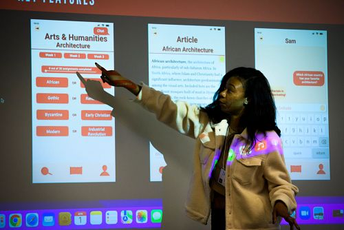
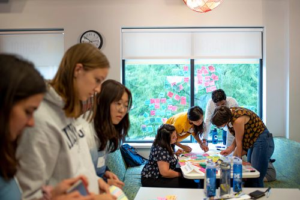

Welcome!
The Academic Success Team at UMSI is dedicated to supporting students inside and outside of the classroom. This site is dedicated to connecting students to tutoring and academic support resources.
The kinds if Academic Support available are:
UMSI Peer Tutoring
Programming Peer Tutoring
Math Peer Tutoring
Additional Academic Support Resources
Link to the Peer-to-Peer Tutor Directory

UMSI Peer Tutoring Program
In partnership with our UMSI faculty, the UMSI Peer Tutoring program is an opportunity for UMSI students and students taking UMSI courses to engage with peer tutors and receive assistance and support in UMSI courses.
For more information regarding student support and tutoring, please email umsi.academicsuccess@umich.edu.
